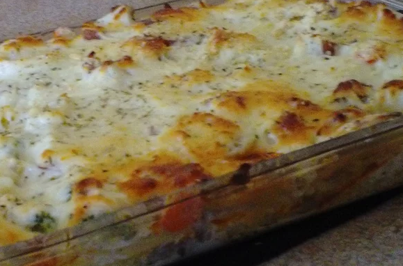

Chicken Taco Lasagna

Description
This is a wood fire thin crust pizza. Light and enjoyable by all!
Ingredients
- 4 boneless skinless chicken breasts, cut into 1/4-inch strips
- ½ cup lime juice
- 2 (1 ounce) packets taco seasoning mix (such as Old El Paso®)
- 1 ½ cups shredded mozzarella cheese, divided
- 1 cup sour cream
- 1 cup salsa
- salt and ground black pepper to taste
- 1 (8 ounce) package no-boil lasagna noodles, or to taste
Steps
- Combine chicken, lime juice, and taco seasoning in a large bowl.
Stir to make sure chicken is evenly covered.
- Cook chicken mixture over medium heat until firm, about 15 minutes.
- Mix 1/2 cup mozzarella cheese, sour cream, and salsa in a bowl.
Season with salt and pepper.
- Put a few spoonfuls of the sour cream mixture in the bottom of a 9x9-inch baking dish.
Layer noodles and chicken on top.
Cover with remaining 1 cup mozzarella cheese.
- Bake in the preheated oven until noodles are tender and cheese is melted,
about 1 hour.